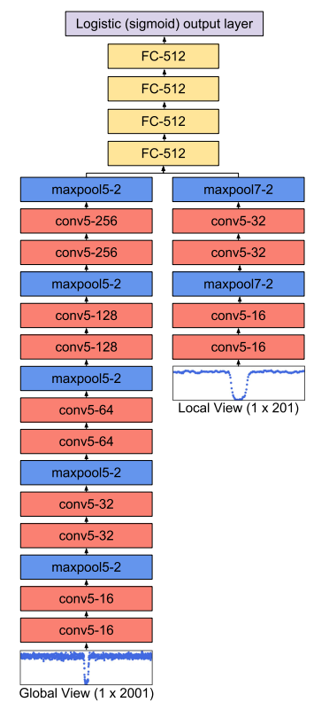

Arquitectura original de Shallue et al. 2018

Este proyecto es un sistema de detección de exoplanetas utilizando redes neuronales convolucionales y transformadas wavelet. Desarrollado en Python con PyTorch para mi trabajo fin de master en astrofísica.
https://github.com/zmadru/ExoPlanet-Detection
Descarga del TFM: Descargar TFM (PDF)
Para más detalles, consulta el notebook interactivo a continuación, visita el proyecto en GitHub o descarga el TFM completo.
Arquitectura original de Shallue et al. 2018
Arquitectura modificada 2D
Arquitectura con skiplayers propuesta
Si prefieres abrir el notebook en una nueva pestaña: Abrir notebook HTML